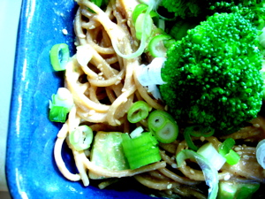

Mom makes spicy noodles
There are lots of versions of this spicy Asian noodle dish; I have adapted a recipe from the Silver Palate New Basics Cookbook entitled Sesame Chicken and Asparagus Pasta and I think it’s particularly tasty. I consult the recipe chiefly for the sauce, or dressing, and generally use whatever green vegetable and protein I have on hand. Tonight I had broccoli, and leftover grilled pork chops from last night that had been brushed with a combination of the Cuisine Perel cilantro/citrus oil and their lime vinegar. Sometimes I put grilled or leftover roast chicken in these noodles, or just make them with no meat at all as a side dish.

Spicy Noodles with Meat and Green Vegetable
1 lb. linguine or spaghetti (I used whole wheat)
6 cloves garlic, minced
2 tablespoons red wine vinegar
2 tablespoons brown sugar
2/3 cup chunky peanut butter
1/2 cup soy sauce
2/3 cup hot pepper toasted sesame oil
1 bunch broccoli
1 bunch scallions, green part included, thinly sliced
about 1/2 lb. cooked meat, julienned, chicken or pork
1. Bring a large pot of water to a boil. If you have a pot with one of those pasta inserts this would be a good time to use it since you will be blanching the vegetables, removing them, and then cooking the pasta. 2. Place garlic, vinegar, sugar, peanut butter, and soy sauce in food processor. Process for 1 minute, scraping bowl halfway through. With the motor running, slowly add the sesame oil through the feed tube and process until well blended. 3. Trim and peel the broccoli stems and cut into small pieces, separating florets. Add to pot and blanch briefly. Don’t do what I did and overcook the broccoli. You can also make this with asparagus by peeling the stalks and cutting on the diagonal and blanching in a similar fashion. Remove vegetables from pot, rinse in cold water to stop cooking, and place in large bowl with julienned meat. Reserve some of the florets to decorate finished dish. 4. Bring water to boil again and cook pasta until al dente. Drain, rinse with cold water and drain well. Add to bowl with meat and vegetables. Pour sauce over ingredients in bowl and toss to combine. Place in large shallow bowl and strew scallions over top. You may scatter toasted sesame seeds or chopped peanuts on top as well, in addition to the reserved broccoli florets. 5. Chill for an hour or so and serve cold or at room temperature.
Comments
Wow! That sounds like a wonderful way to use up leftover meat. It’s also the perfect minimal cooking kind of meal that’s so perfect at this time of year.
Add a comment